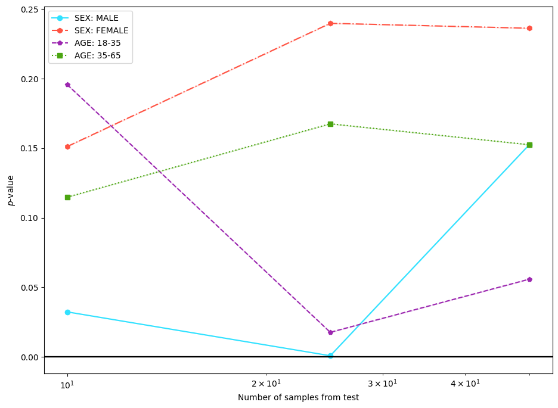

NIHCXR Clinical Drift Experiments Tutorial
Import Libraries and Load NIHCXR Dataset
[1]:
"""NIHCXR Clinical Drift Experiments Tutorial."""
from functools import partial
from monai.transforms import AddChanneld, Compose, Lambdad, Resized, ToDeviced
from torchxrayvision.models import DenseNet
from cyclops.data.loader import load_nihcxr
from cyclops.data.slicer import SliceSpec
from cyclops.data.utils import apply_transforms
from cyclops.monitor import ClinicalShiftApplicator, Detector, Reductor, TSTester
from cyclops.monitor.plotter import plot_drift_experiment, plot_drift_timeseries
from cyclops.monitor.utils import get_device
device = get_device()
nih_ds = load_nihcxr("/mnt/data/clinical_datasets/NIHCXR")
/home/amritk/.cache/pypoetry/virtualenvs/pycyclops-wIzUAwxh-py3.9/lib/python3.9/site-packages/tqdm/auto.py:21: TqdmWarning: IProgress not found. Please update jupyter and ipywidgets. See https://ipywidgets.readthedocs.io/en/stable/user_install.html
from .autonotebook import tqdm as notebook_tqdm
Example 1. Generate Source/Target Dataset for Experiments (1-2)
[2]:
shifter = ClinicalShiftApplicator(
"sex", source=None, target="F", shift_id="Patient Gender",
)
source_ds, target_ds = shifter.apply_shift(nih_ds, num_proc=6)
transforms = Compose(
[
AddChanneld(keys=("features",), allow_missing_keys=True),
Resized(
keys=("features",), spatial_size=(1, 224, 224), allow_missing_keys=True,
),
Lambdad(
keys=("features",),
func=lambda x: ((2 * (x / 255.0)) - 1.0) * 1024,
allow_missing_keys=True,
),
ToDeviced(keys=("features",), device=device, allow_missing_keys=True),
],
)
source_ds = source_ds.with_transform(
partial(apply_transforms, transforms=transforms),
columns=["features"],
output_all_columns=True,
)
target_ds = target_ds.with_transform(
partial(apply_transforms, transforms=transforms),
columns=["features"],
output_all_columns=True,
)
Filter (num_proc=6): 100%|██████████| 112120/112120 [00:00<00:00, 118657.61 examples/s]
Filter (num_proc=6): 100%|██████████| 112120/112120 [00:00<00:00, 125653.96 examples/s]
Example 2. Sensitivity test experiment with 3 dimensionality reduction techniques
[3]:
model = DenseNet(weights="densenet121-res224-all")
dr_methods = {
"BBSE": "bbse-soft",
"BBSE + TXRV-AE": "bbse-soft+txrv-ae",
"TXRV-AE": "txrv-ae",
}
results = {}
for name, dr_method in dr_methods.items():
if name == "TXRV-AE":
reductor = Reductor(dr_method=dr_method, device=device)
else:
reductor = Reductor(dr_method=dr_method, model=model, device=device)
detector = Detector(
"sensitivity_test",
reductor=reductor,
tester=TSTester(tester_method="ks"),
source_sample_size=50,
target_sample_size=[10, 25, 50],
num_runs=1,
)
result = detector.detect_shift(source_ds, target_ds)
results[name] = result
plot_drift_experiment(results)
Map: 100%|██████████| 50/50 [00:02<00:00, 22.98 examples/s]
Map: 100%|██████████| 10/10 [00:00<00:00, 16.10 examples/s]
Map: 100%|██████████| 25/25 [00:01<00:00, 16.82 examples/s]
Map: 100%|██████████| 50/50 [00:02<00:00, 22.74 examples/s]
Map: 100%|██████████| 50/50 [00:02<00:00, 22.82 examples/s]
Map: 100%|██████████| 10/10 [00:00<00:00, 15.33 examples/s]
Map: 100%|██████████| 25/25 [00:01<00:00, 16.01 examples/s]
Map: 100%|██████████| 50/50 [00:02<00:00, 21.64 examples/s]
Map: 100%|██████████| 50/50 [00:02<00:00, 23.64 examples/s]
Map: 100%|██████████| 10/10 [00:00<00:00, 16.63 examples/s]
Map: 100%|██████████| 25/25 [00:01<00:00, 16.81 examples/s]
Map: 100%|██████████| 50/50 [00:02<00:00, 22.76 examples/s]

Example 3. Sensitivity test experiment with models trained on different datasets
[4]:
models = {
"MODEL: NIH": "densenet121-res224-nih",
"MODEL: CHEXPERT": "densenet121-res224-chex",
"MODEL: PADCHEST": "densenet121-res224-pc",
}
results = {}
for model_name, model in models.items():
detector = Detector(
"sensitivity_test",
reductor=Reductor(
dr_method="bbse-soft", model=DenseNet(weights=model), device=device,
),
tester=TSTester(tester_method="ks"),
source_sample_size=50,
target_sample_size=[10, 25, 50],
num_runs=1,
)
results[model_name] = detector.detect_shift(source_ds, target_ds)
plot_drift_experiment(results)
Map: 100%|██████████| 50/50 [00:02<00:00, 24.33 examples/s]
Map: 100%|██████████| 10/10 [00:00<00:00, 16.27 examples/s]
Map: 100%|██████████| 25/25 [00:01<00:00, 17.45 examples/s]
Map: 100%|██████████| 50/50 [00:02<00:00, 23.18 examples/s]
Map: 100%|██████████| 50/50 [00:02<00:00, 24.11 examples/s]
Map: 100%|██████████| 10/10 [00:00<00:00, 15.94 examples/s]
Map: 100%|██████████| 25/25 [00:01<00:00, 17.12 examples/s]
Map: 100%|██████████| 50/50 [00:02<00:00, 23.16 examples/s]
Map: 100%|██████████| 50/50 [00:02<00:00, 24.11 examples/s]
Map: 100%|██████████| 10/10 [00:00<00:00, 13.09 examples/s]
Map: 100%|██████████| 25/25 [00:01<00:00, 17.11 examples/s]
Map: 100%|██████████| 50/50 [00:02<00:00, 22.67 examples/s]

Example 4. Sensitivity test experiment with different clinical shifts
[5]:
model = DenseNet(weights="densenet121-res224-all")
source_slice = None
target_slices = {
"SEX: MALE": SliceSpec(spec_list=[{"Patient Gender": {"value": "M"}}]),
"SEX: FEMALE": SliceSpec(spec_list=[{"Patient Gender": {"value": "F"}}]),
"AGE: 18-35": SliceSpec(
spec_list=[{"Patient Age": {"min_value": 18, "max_value": 35}}],
),
"AGE: 35-65": SliceSpec(
spec_list=[{"Patient Age": {"min_value": 35, "max_value": 65}}],
),
}
results = {}
for name, target_slice in target_slices.items():
source_slice = None
shifter = ClinicalShiftApplicator(
"custom", source=source_slice, target=target_slice,
)
ds_source, ds_target = shifter.apply_shift(nih_ds, num_proc=6)
ds_source = ds_source.with_transform(
partial(apply_transforms, transforms=transforms),
columns=["features"],
output_all_columns=True,
)
ds_target = ds_target.with_transform(
partial(apply_transforms, transforms=transforms),
columns=["features"],
output_all_columns=True,
)
detector = Detector(
"sensitivity_test",
reductor=Reductor(dr_method="bbse-soft", model=model, device=device),
tester=TSTester(tester_method="ks"),
source_sample_size=50,
target_sample_size=[10, 25, 50],
num_runs=1,
)
results[name] = detector.detect_shift(ds_source, ds_target)
plot_drift_experiment(results)
Filter (num_proc=6): 100%|██████████| 112120/112120 [00:01<00:00, 81456.38 examples/s]
Filter (num_proc=6): 100%|██████████| 112120/112120 [00:01<00:00, 80150.69 examples/s]
Map: 100%|██████████| 50/50 [00:02<00:00, 24.00 examples/s]
Map: 100%|██████████| 10/10 [00:00<00:00, 16.17 examples/s]
Map: 100%|██████████| 25/25 [00:01<00:00, 17.38 examples/s]
Map: 100%|██████████| 50/50 [00:02<00:00, 23.57 examples/s]
Filter (num_proc=6): 100%|██████████| 112120/112120 [00:01<00:00, 84651.66 examples/s]
Filter (num_proc=6): 100%|██████████| 112120/112120 [00:01<00:00, 81951.58 examples/s]
Map: 100%|██████████| 50/50 [00:02<00:00, 24.03 examples/s]
Map: 100%|██████████| 10/10 [00:00<00:00, 16.47 examples/s]
Map: 100%|██████████| 25/25 [00:01<00:00, 17.20 examples/s]
Map: 100%|██████████| 50/50 [00:02<00:00, 22.99 examples/s]
Filter (num_proc=6): 100%|██████████| 112120/112120 [00:01<00:00, 91172.76 examples/s]
Filter (num_proc=6): 100%|██████████| 112120/112120 [00:01<00:00, 91240.78 examples/s]
Map: 100%|██████████| 50/50 [00:02<00:00, 24.33 examples/s]
Map: 100%|██████████| 10/10 [00:00<00:00, 15.67 examples/s]
Map: 100%|██████████| 25/25 [00:01<00:00, 17.38 examples/s]
Map: 100%|██████████| 50/50 [00:02<00:00, 22.68 examples/s]
Filter (num_proc=6): 100%|██████████| 112120/112120 [00:01<00:00, 84118.15 examples/s]
Filter (num_proc=6): 100%|██████████| 112120/112120 [00:01<00:00, 84783.84 examples/s]
Map: 100%|██████████| 50/50 [00:02<00:00, 24.11 examples/s]
Map: 100%|██████████| 10/10 [00:00<00:00, 16.38 examples/s]
Map: 100%|██████████| 25/25 [00:01<00:00, 17.37 examples/s]
Map: 100%|██████████| 50/50 [00:02<00:00, 23.18 examples/s]

Example 5. Rolling window experiment with synthetic timestamps using biweekly window
[6]:
model = DenseNet(weights="densenet121-res224-all")
detector = Detector(
"rolling_window_drift",
reductor=Reductor(dr_method="bbse-soft", model=model, device=device),
tester=TSTester(tester_method="ks"),
source_sample_size=50,
target_sample_size=10,
timestamp_column="timestamp",
window_size="4W",
)
results = detector.detect_shift(source_ds, target_ds)
plot_drift_timeseries(results)
Map: 100%|██████████| 50/50 [00:02<00:00, 24.12 examples/s]
Map: 100%|██████████| 10/10 [00:00<00:00, 16.24 examples/s]
Map: 100%|██████████| 10/10 [00:00<00:00, 16.24 examples/s]
Map: 100%|██████████| 10/10 [00:00<00:00, 16.07 examples/s]
Map: 100%|██████████| 10/10 [00:00<00:00, 15.49 examples/s]
Map: 100%|██████████| 10/10 [00:00<00:00, 15.57 examples/s]
Map: 100%|██████████| 10/10 [00:00<00:00, 16.46 examples/s]
Map: 100%|██████████| 10/10 [00:00<00:00, 16.38 examples/s]
Map: 100%|██████████| 10/10 [00:00<00:00, 16.20 examples/s]
Map: 100%|██████████| 10/10 [00:00<00:00, 16.57 examples/s]
Map: 100%|██████████| 10/10 [00:00<00:00, 15.96 examples/s]
Map: 100%|██████████| 10/10 [00:00<00:00, 16.32 examples/s]
Map: 100%|██████████| 10/10 [00:00<00:00, 16.51 examples/s]
Map: 100%|██████████| 10/10 [00:00<00:00, 16.49 examples/s]
Map: 100%|██████████| 10/10 [00:00<00:00, 16.48 examples/s]